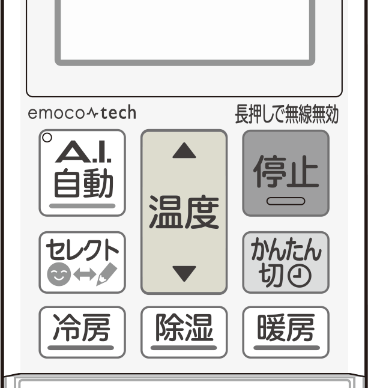
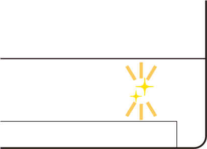

×
エアコンをアクセスポイントモード（APモード）にする

- リモコンの「停止」ボタンを押して運転を停止します。
- 「温度▲」ボタンを「ー0」が表示されるまで５秒以上長押しします。
- 「温度▲」ボタンまたは「温度▼」ボタンで「ー1」を選択して、エアコンに向けて「停止」ボタンを押すと、エアコンが「APモード」に設定されます。
- 再度「APモード」を設定、または「WPSモード」を続けて設定すると“ピピピッ”と音が鳴り、操作を受け付けないことがあります。
- 詳しくは各エアコンの取扱説明書をご確認ください。
- 室内機のランプが約5秒間隔で1回点滅しながら“ピッ”と音が鳴ることを確認してください。
- この状態は10分で終了します。10分以上経過した場合は1からやり直してください。
